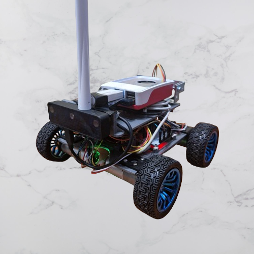
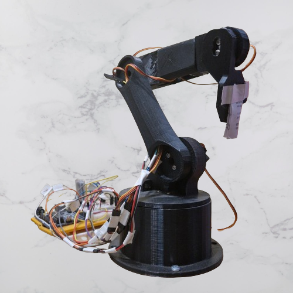
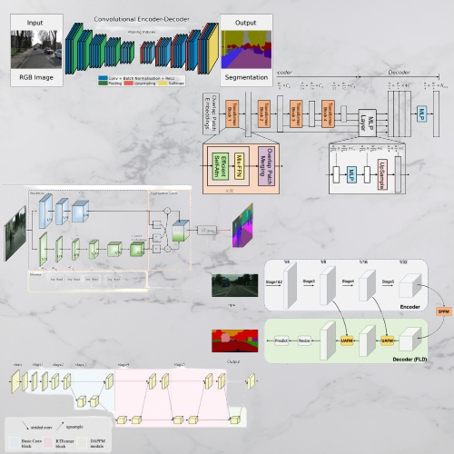
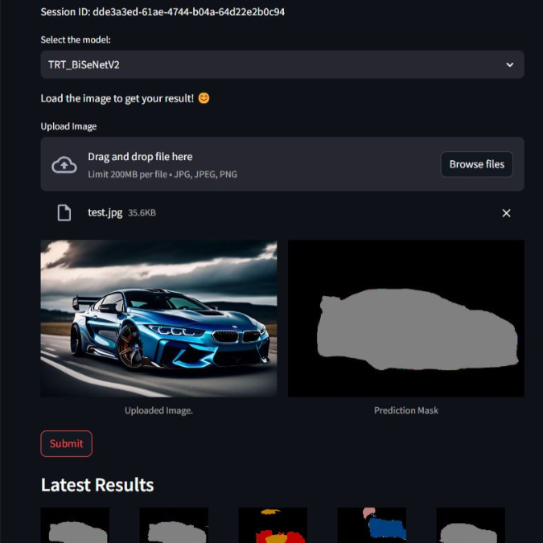
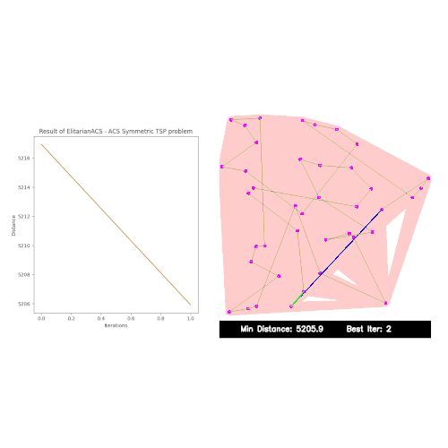

Hi, I'm
Antonio Consiglio
Computer Vision Engineer specializing in end-to-end AI systems — from training and deploying models on edge hardware to building Agentic workflows with LLMs and VLMs. Passionate about turning research into production-ready solutions for real-world impact.
Areas of Expertise
Core competencies built through years of deploying real AI systems.
Computer Vision Layer
Training and optimizing deep learning models for object detection, image classification, and semantic segmentation on custom datasets.
Edge AI & Inference
Exporting to ONNX and converting to target-specific formats for high-efficiency deployment across heterogeneous edge devices.
Agentic AI Workflows
Architecting robust agentic workflows using LLMs and VLMs to automate complex reasoning and dynamic decision-making in real-time pipelines.
Professional Journey
Real-world impact across robotics, autonomous systems, and enterprise scales.
Applied Scientist – Computer Vision
Presight | G42 · Abu Dhabi, UAE
- Design and deploy end-to-end Computer Vision & Agentic AI solutions for smart city and enterprise-scale applications.
- Train and optimize deep learning models (detection, classification, segmentation); export to ONNX and convert for high-efficiency edge deployment.
- Lead development of a new GenAI project from the ground up, driving latency improvements across legacy pipelines.
- Architect agentic workflows using LLMs, VLMs, FastAPI and PydanticAI via real-time video analytics reasoning.
Computer Vision Engineer
Lanit-Tercom Italia S.R.L. · Bari, Italy
- Led and coordinated two R&D teams through the full project lifecycle for an international autonomous robotics client.
- Researched, trained and deployed Semantic Segmentation & Object Detection models optimized for real-time edge performance via TensorRT.
- Developed a C++ shared library with Python bindings, implementing path planning (ACO) into the robot's autonomous navigation stack.
Robotics & AI Software Engineer
EPF Automation · Carrù, Italy
- Developed CV applications for industrial automation using Python and C#, integrating deep learning detection into production.
- Built a full perception-to-action pipeline managing Intel RealSense cameras, Cognex ViDi inference, and communicating coordinates to a Mitsubishi robotic arm through a custom PySide2 HMI.
Featured Projects
Implementations of autonomous systems, optimization algorithms, and deep learning architectures.

Autonomous Rover - ROS2
Autonomous rover designed with differential kinematics, equipped with a Raspberry Pi 5, ESP32, and OAK-D Lite camera. Software leverages ROS2, micro-ROS, and Nav2 for autonomous control.

5D Robot Arm - ROS2
Application to interface with a 3D-printed robotic arm via Arduino Uno and OAK-D Lite stereo camera. Enables users to command arm movements, calibrate vision, and assign a reference system.

SemSeg - PyTorch
Implementation of modern architectures for semantic segmentation. A learning resource focused on creating and training lightweight models based on original research papers.

Streamlit - Triton Server
Dockerized CV App utilizing NVIDIA Triton Inference Server and PostgreSQL database, demonstrating streamlined, efficient, and scalable deployment of AI models.

A* Path finder - Python
An interactive visual representation built with PyGame to demonstrate the inner workings and nodes expansion of the A* algorithm for shortest path finding.

TSP with ACS - Python
Implementation of the Ant Colony System (ACS) metaheuristic algorithm. Inspired by the foraging behavior of ants to find high-quality solutions to the Traveling Salesman Problem.